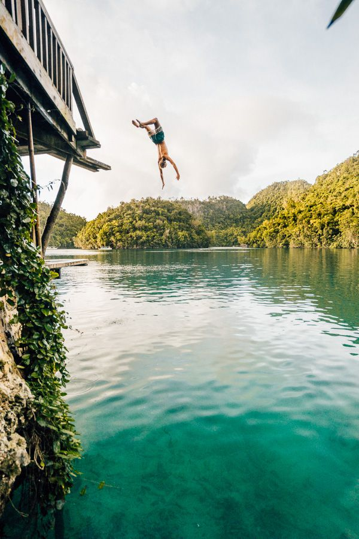
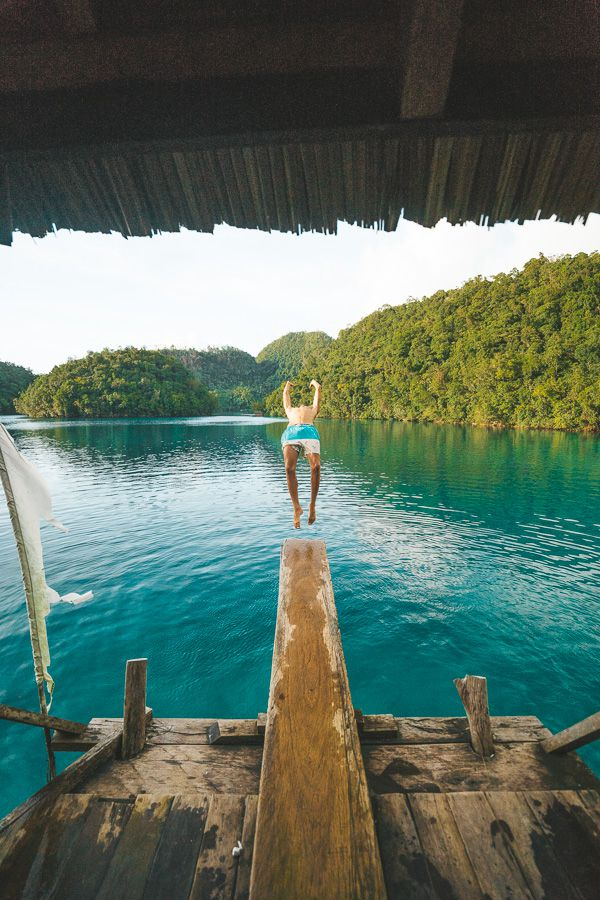

The beauty of surfing on Siargao is that there is a surf break for all levels. Personally, I suck at surfing so I hit up the beginner waves at Jacking Horse. I did enjoy watching the seasoned surfers tearing up the bigger waves out at Cloud 9. This wave barrels and is not only one of the best waves in the Philippines but is ranked in the top ten waves of the world.
Magpupungko Rock Pools on Siargao Island are one of the most popular things to do and easily my favorite tourist spot on Siargao.. Just a 45-minute moped drive from the main tourist area of General Luna, the rock pools are exposed at low tide and are an awesome spot for hours of exploring and cliff jumping.
Tayangban Cave Pool was one of the highlights of my many adventures throughout Siargao Island. It was one of the best caving experiences I have had in Asia. For 15 minutes you swim and float in darkness, only aided by torches. Bats fly around you until you finally emerge to the open cave pool where you can cliff jump from seven meters.
Sugba Lagoon is one of the most popular things to do on Siargao. It’s a short day trip from General Luna, Siargao to a spectacular lagoon surrounded by epic mountains. A floating hut has a diving board and SUP rentals. The day trip costs around 1500 pesos (30 USD) per person or more if you book it in the tourist are of General Luna. However, we managed to find a way to get to Sugba Lagoon for 300 pesos (5 USD) per person. You can read about that by clicking the link below for the full blog post.
There are so many awesome things to do in Siargao Island but one of the most popular activities is to get off the island and go island hopping from Siargao. There are three beautiful islands only a short long-tail boat trip away from General Luna, which is the tourist part of Siargao. Guyam Island, Daku Island, and Naked Island are the three stops along the tour, which includes pick-up, drop-off, and a seafood lunch. The whole Mindanao region is covered with beautiful islands
Heading up to TakTak waterfall in Santa Monica is a full- day adventure to the north part of the island. From General Luna, the waterfall is 1.5-hour drive but is well worth the effort. We enjoyed the waterfall to ourselves. Cliff jumping, tree jumping, and exploration to the top of the falls were the highlights of the adventure. It’s one of the less touristy things to do in Siargao but definitely worthy of making it in to my Siargao travel guide. It’s the only waterfall you will find on Siargao but a pretty damn cool one!
The first thing I noticed at Alegria Beach on Siargao was the white sand and crystal clear water. Coconut palms lined the beach. It could have been a postcard. This wasn’t one of the popular Siargao tourist spots with just a few locals hanging back on the grass behind the beach. It is quite a long drive to Alegria Beach from General Luna. It can take about an hour driving.
Shaka is the standout and an obligatory acai bowl is required from this chill little cafe right by Cloud 9 surf break. With lots of different smoothie bowl options, you can’t go wrong especially with a coffee included for $5 USD. Not a bad way to kickstart your day! Don’t forget to upload a photo of your bowl to Instagram because these bowls are works of art. If you didn’t gram it.. did you really have a smoothie bowl?
You’ve probably heard of 10000 Roses Café & More by now. It is undeniably the most popular and most sought-after café in Cebu today after making a huge buzz on Facebook. For sure, at least three days from now, this Korean café will surely be enjoying the hype now and eventually be worrying about accommodating all these curious and excited guests.
Our tour guide parked the bought at a pier to a bit of a random looking resort. However, it had a 5-meter diving board. They knew us too well. 30 flips and crash-landings later my head was full of water and we had the best time! Definitely, try and stop here if your guide is up for it.
 


© Sernel Miranda Asunto (2019)